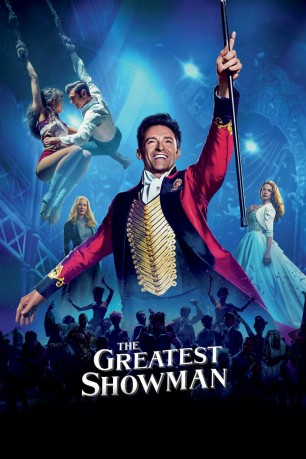

Auszeichnungen: für 1 Oscars nominiert 1 GoldenGlobes gewonnen
 gesehen am 11.04.2018
gesehen am 11.04.2018Alternativ: The Greatest Showman
Auszeichnungen: für 1 Oscars nominiert 1 GoldenGlobes gewonnen gesehen am 11.04.2018
 
 IMDB-Wertung: 7.7 / 10
IMDB-Wertung: 7.7 / 10  Metascore:
Metascore: 
Als P.T. Barnum seine Arbeit verliert, treiben ihn und seine Frau Charity Existenzsorgen um. Doch dann hat der zweifache Vater Barnum eine Geschäftsidee: Er gründet ein Kuriositätenkabinett, für das er unter anderem eine bärtige Frau und einen kleinwüchsigen Mann anheuert. Doch er will seinen zahlenden Gästen nicht nur Kurioses bieten, sondern auch eine atemberaubende Show mit Akrobaten wie der Trapezkünstlerin Anne Wheeler und spektakulären Tänzern. Gleichzeitig sehnt Barnum sich nach dem Respekt der feinen Gesellschaft, die hochnäsig auf seinen Zirkus herabsieht. Er tut sich daher mit dem seriösen Theatermacher Phillip Carlyle zusammen und als er bei einer königlichen Audienz der schwedischen Opernsängerin Jenny Lind begegnet, wittert er die Chance darauf, endlich auch in der High Society und in der Kunstszene ernstgenommen zu werden. Er geht mit Jenny auf Amerika-Tournee...
Jahr: 2017
Dauer: 104 Minuten
FSK: 6
Land: USA Studio: Twentieth Century FoxTonspuren: DTS - ,
Untertitel: Deutsch, Englisch,
Auflösung: 1080p (1920x800) Größe: 5273 MB
Genre: Drama, Liebe, Biographie, Musical
Regisseur: Michael Gracey
Drehbuch: Jenny Bicks
Soundtrack: John Debney, Joseph Trapanese
Darsteller:
 Hugh Jackman als P.T. Barnum
Hugh Jackman als P.T. Barnum Michelle Williams als Charity Barnum
Michelle Williams als Charity Barnum Zac Efron als Phillip Carlyle
Zac Efron als Phillip Carlyle Zendaya als Anne Wheeler
Zendaya als Anne Wheeler Rebecca Ferguson als Jenny Lind
Rebecca Ferguson als Jenny Lind Yahya Abdul-Mateen II als W.D. Wheeler
Yahya Abdul-Mateen II als W.D. Wheeler Paul Sparks als James Gordon Bennett
Paul Sparks als James Gordon Bennett Byron Jennings als Mr. Carlyle
Byron Jennings als Mr. Carlyle Betsy Aidem als Mrs. Carlyle
Betsy Aidem als Mrs. Carlyle Damian Young als Mr. Winthrop
Damian Young als Mr. Winthrop Tina Benko als Mrs. Winthrop
Tina Benko als Mrs. Winthrop Fredric Lehne als Mr. Hallett
Fredric Lehne als Mr. HallettDatei: X:\2017(G-M)\Greatest Showman (2017, FSK6, 1920x800).mkv seit 05.03.2018
Festplatte: HD 2017(A-Z)-2018(A-F)
 Es gibt insgesamt 148 Filme in der Gruppe '2017(G-M)'
Es gibt insgesamt 148 Filme in der Gruppe '2017(G-M)'